Brugervejledning
Træningsplanlægning for unge landevejsryttere i U17, U19 og U23, deres trænere og deres forældre. Sådan bruger du Kadence, rolle for rolle.
Kapitel 1
Hvad Kadence er
En kalender med træningspas på cyklen og i styrkerummet, det der faktisk blev kørt, en daglig check-in og en sæsonplan, der starter fra Cykling Danmarks anbefalinger.
Træneren lægger træningspas i rytternes kalender, én rytter ad gangen eller hele holdet på én gang. Rytteren kører træningspasset, og turen kommer tilbage fra en fil eller en cykelcomputer og lander på det træningspas, den hørte til. Hver morgen svarer rytteren på tre korte spørgsmål, så træneren kan se, om træningen passer til resten af livet. Sæsonplanen går fra oktober til september og starter fra DCU's timer for rytterens årgang. Træneren kan ændre alt, og DCU's tal står altid ved siden af.
Rytterens data er rytterens. Adskillelsen mellem hold og mellem ryttere ligger i databasen, ikke kun i skærmbillederne. Kadence er open source, kører på en server i EU eller på klubbens egen, og alt kan hentes ud som regneark og JSON og slettes helt igen. AI'en, hvor den er sat op, foreslår. Mennesket bestemmer.
Kapitel 2
Kom i gang
Et link, en adgangskode, og Kadence på hjemmeskærmen. Så er du i gang.
Log ind første gang
Du får et link fra din træner, på sms eller i klubbens chat. Linket siger, hvad du er inviteret som: rytter, forælder til et bestemt barn, eller træner. Du vælger en adgangskode, og så er du inde på holdet. Linket virker i en uge og kun for din e-mailadresse.
Kadence sender ingen mails. Har du glemt din adgangskode, laver din træner et nyt link til dig under Indstillinger → Arbejdsrum og sender det selv. Linket virker én gang og kun den næste time.
Læg Kadence på hjemmeskærmen
Kadence er lavet til telefonen og kører i browseren uden app-butik. Lagt på hjemmeskærmen åbner den som en app, og påmindelser kan komme igennem.
- iPhone: åbn Kadence i Safari, tryk på Del-knappen, og vælg Føj til hjemmeskærm.
- Android: åbn menuen i Chrome, og vælg Installer app eller Føj til startskærm.
Rundt i Kadence
Menuen har højst fire steder, de samme på computeren og i bundbjælken på telefonen, i samme rækkefølge. Resten ligger under Mere, med Indstillinger sidst.
| Rolle | De fire steder | Under Mere |
|---|---|---|
| Træner | Overblik · Kalender · Ryttere · Bibliotek | Sæson, Rulle, Klubmester, Trænerrummet, Viden og hjælp, Indstillinger |
| Rytter | I dag · Kalender · Mig · Bibliotek | Sæson, Rulle, Klubmester, Viden og hjælp, Indstillinger |
| Forælder | Barnets navn · Kalender · Viden og hjælp | Klubmester, Indstillinger |
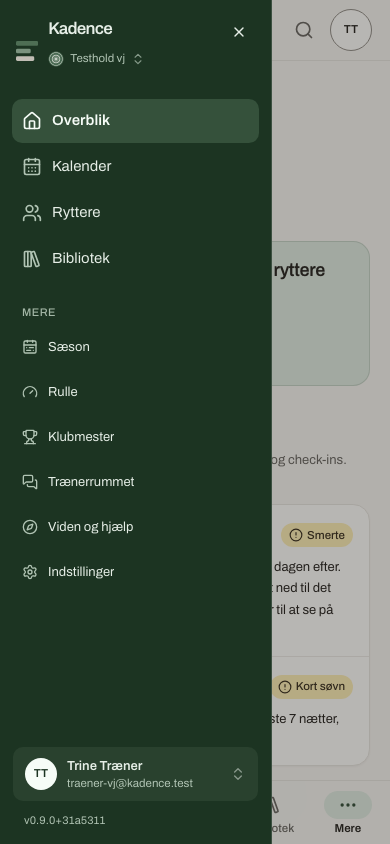
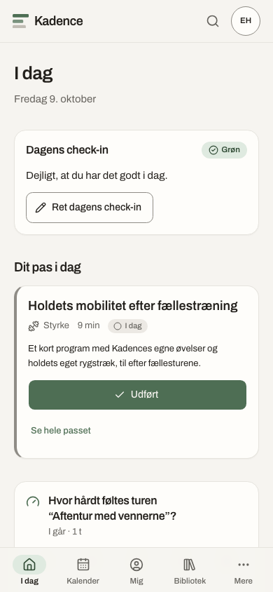
Søg
Ét felt finder en rytter, et træningspas fra biblioteket, en side eller et afsnit i hjælpen. På computeren trykker du ⌘K på en Mac eller Ctrl K på en pc, eller på søgefeltet øverst i menuen. På telefonen er det luppen i toppen. Skriv et par bogstaver, gå op og ned med piletasterne, og tryk Enter. Du kan skrive o for ø og a for å. Søg viser kun det, du i forvejen må se.
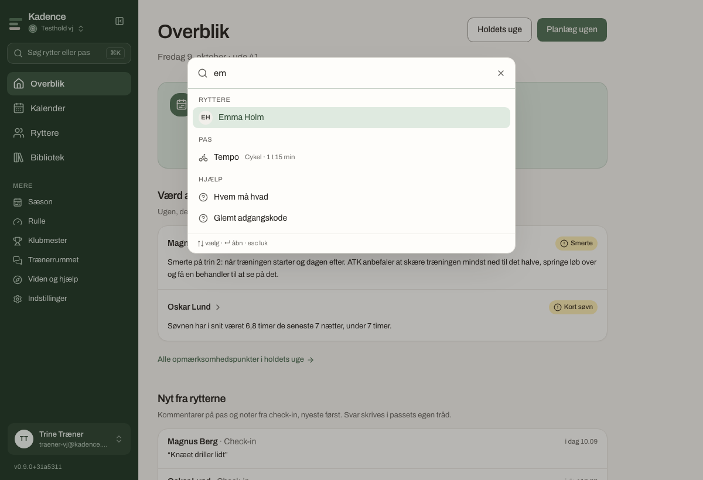
Udseende
Under Indstillinger → Profil vælger du lys eller mørk, og om menuen skal stå i mørk mos eller på papir som resten af siden. Valget gælder på den enhed, du sidder ved.
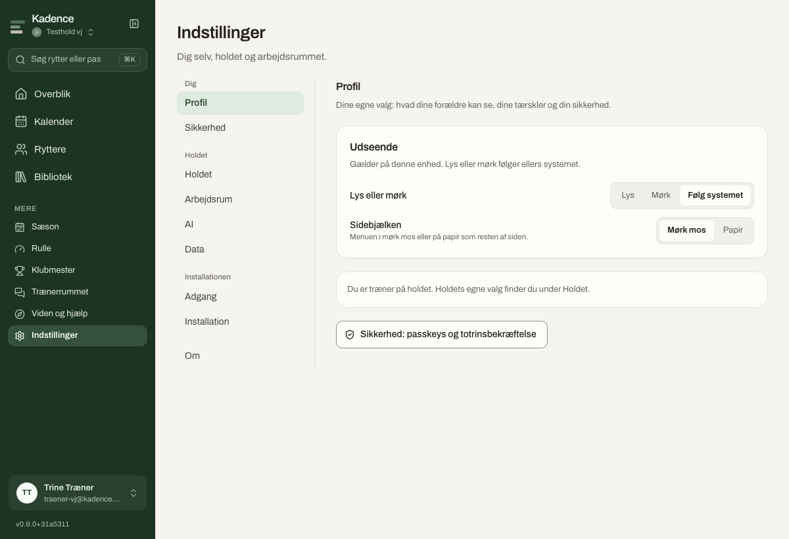
Kapitel 3
For træneren
Målet er, at du kan lægge holdets uge på fem minutter på telefonen, og se med det samme, hvem der har brug for en snak.
Overblik
Overblik er din forside. Øverst står, om næste uge er planlagt, og hvad der er i den, som ferie, eksamen, lejr og løb, med en knap til planlæggeren for den uge. Derefter de tre ryttere, der er mest værd at se på i ugen, der er i gang. Nyt fra rytterne samler rytternes egne kommentarer på træningspas og ture og deres noter fra check-in de seneste 14 dage. Du svarer i træningspassets egen tråd. Nederst står holdets træningspas i dag og holdets begivenheder i ugen.
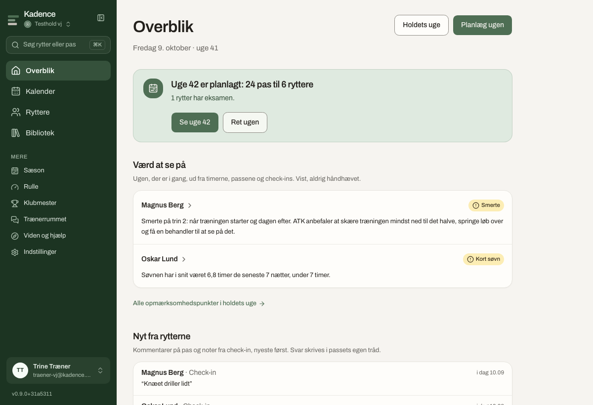
Kalenderen og holdets uge
Kalenderen viser en uge ad gangen. Hele holdet er en række pr. rytter og en kolonne pr. dag, på telefonen et kort pr. rytter. Hvert træningspas er en chip i sin farve: grøn er som planlagt, gul er tæt på planen, rød er din egen version eller ikke nået, og grå er ikke kørt endnu. Der står altid et ord ved farven. Et mærke ved rytterens navn, som "Smerte" eller "Kort søvn", siger, at der er noget værd at se på, og under ugen står hele listen med forklaringer. Når I har talt om et punkt, markerer du det Afklaret.
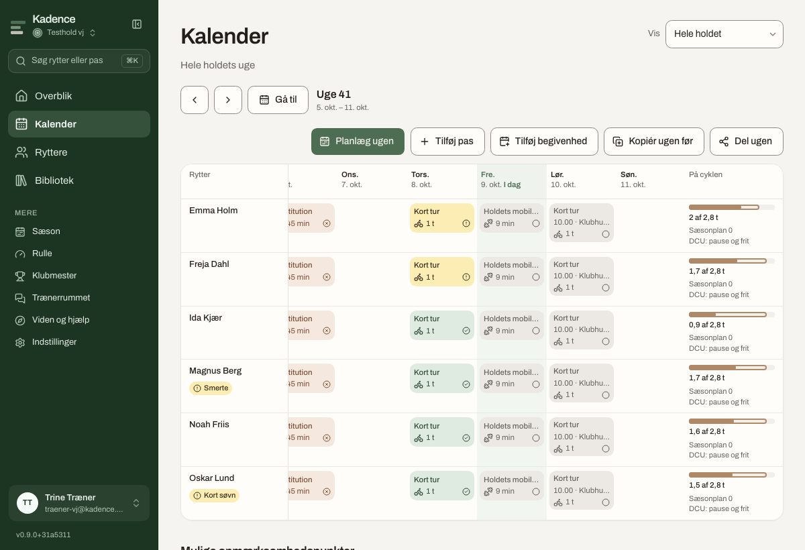
Fra kalenderen kan du tilføje et træningspas til én eller flere ryttere, tilføje en begivenhed som et løb eller en lejr, kopiere ugen før og dele ugen: en tekst med ugens træningspas, tider og steder til holdets chat, uden et ord om, hvordan nogen har det. Et træningspas kan have et tidspunkt og et mødested, fx "17.30 fra klubhuset". Træk et træningspas til en anden dag på computeren, eller brug "Flyt" på telefonen.
Planlæg ugen
Al planlægning af en hel uge sker ét sted. Vælg hvem ugen er for: hele holdet, en årgang eller enkelte ryttere. Vælg, hvor du starter fra: en tom uge, sidste uge, et forløb fra biblioteket eller et forslag fra AI'en. Læg træningspas på dagene, og se, hvad ugen giver mod sæsonplanen, før du lægger den ind. Intet rammer kalenderen, før du trykker. Ugen kan gentages i flere uger, og en god uge kan gemmes som forløb til senere. Kladden gemmes undervejs, så holdets andre trænere kan se og rette den.
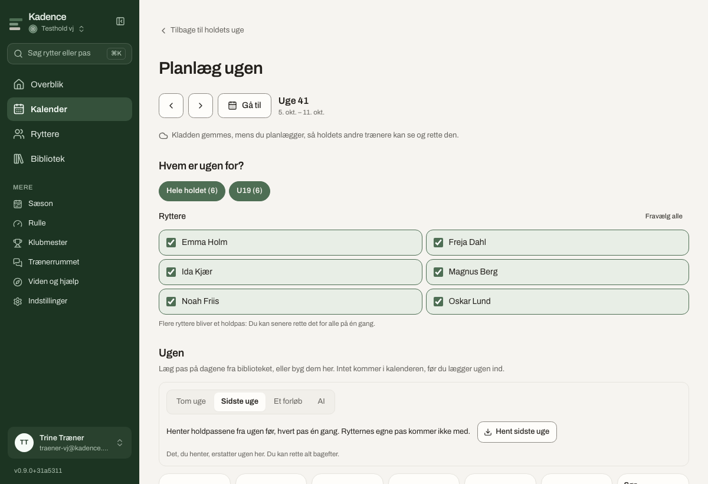
Biblioteket
Biblioteket har to dele. Træningspas og forløb er holdets skabeloner: et træningspas, du kan bruge igen og igen, til én rytter eller hele holdet. Nyt træningspas giver tre veje: et cykelpas bygget i trin med opvarmning, arbejde, pause og nedkørsel; et styrkepas med øvelser; eller Byg med AI, hvor du skriver træningspasset med dine egne ord, fx "5x4 min VO2max". Forslaget vises først, og intet gemmes, før du gemmer. Bag de tre prikker henter du DCU's styrkeprogrammer: 30 træningspas med progression for U17, U19 og U23, så træningspas syv siger 3 × 12. Et forløb er flere ugers træningspas, lagt ind fra en mandag hos en eller flere ryttere.
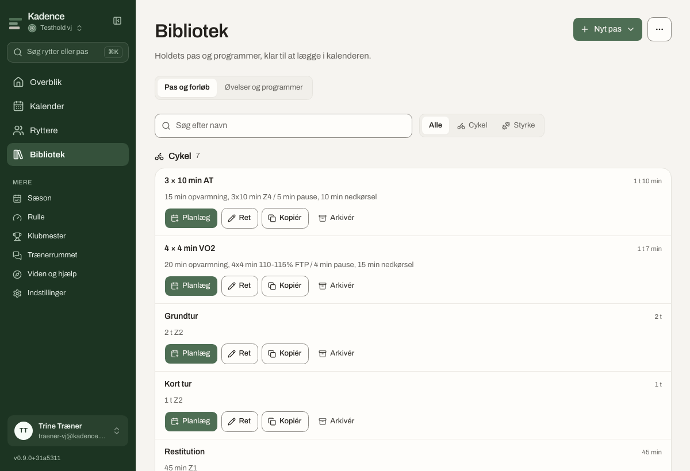
Øvelser og programmer er bibliotekets anden del: øvelser med tegninger, en dosis og et kort hvordan og hvorfor, samlet i programmer. Et program er en opskrift på ét styrkepas. Læg i kalenderen gør det til et træningspas, hvor hver øvelse viser sin tegning. Du kan tegne holdets egne øvelser med tegneværktøjet og sætte dem sammen til programmer ved siden af Kadences egne. Vil du dele et program med nogen uden login, ligger Kadences egne programmer også på en åben side, hvor de kan hentes som én fil eller printes.
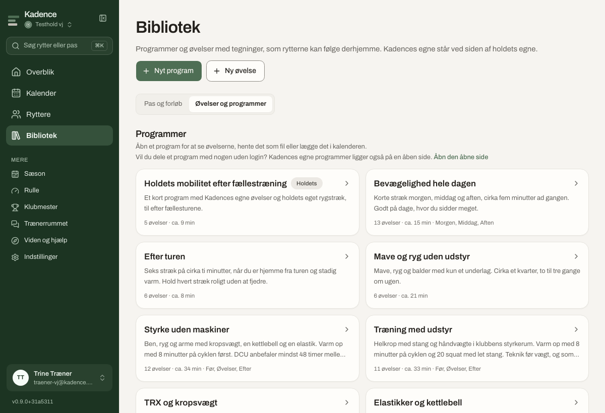
Ryttere
Her står holdet: navn, årgang, om rytteren har en konto, og hvor mange forældre der er koblet på. Tilføj rytter opretter én ad gangen, navn og fødselsår er nok. Inviter hele holdet tager en liste med én rytter pr. linje: navn, fødselsår og e-mail, og forældre efter et semikolon. Du får et link pr. person at dele på sms eller i chatten, og de links, der ikke er brugt endnu, venter øverst på siden. Søg efter en rytter ved navn, eller vis én årgang ad gangen.
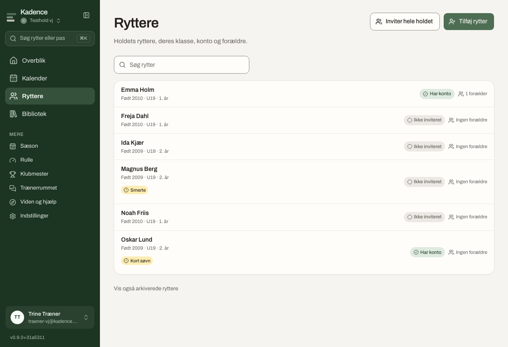
Rytterens egen side samler ugen og trivslen, formen og timerne, profilen med tærsklerne (FTP og tærskelpuls, som zonerne regnes ud fra), procesmål, rekorder, forældre og konto. Herfra kan du uploade en tur på rytterens vegne, sende et link til rytteren igen, og arkivere en rytter, der har forladt holdet. Rytteren beholder sin historik, men forsvinder fra listerne.
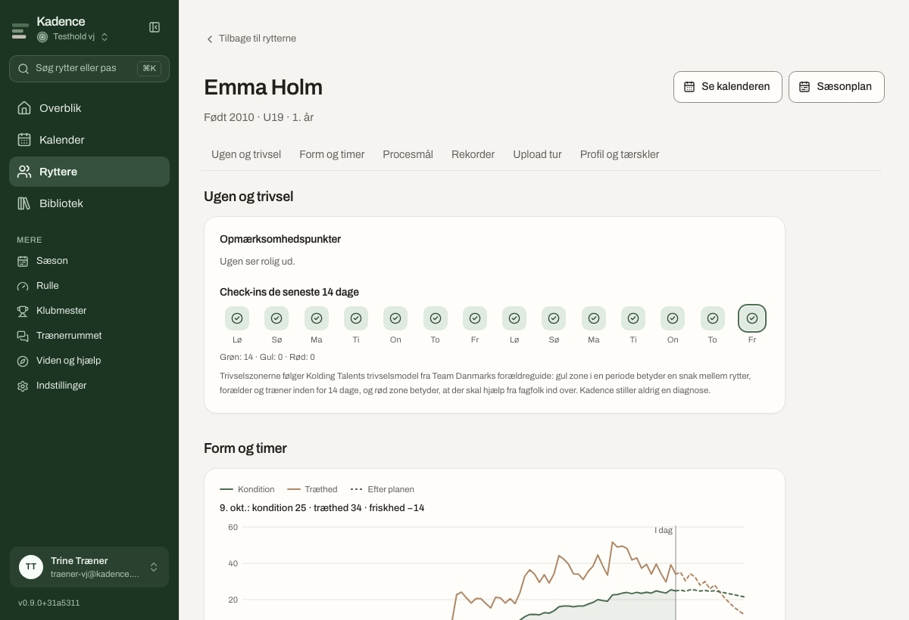
Sæson og DCU
Sæsonen går fra oktober til september. Under Sæson → Hele holdet ser du hver rytters timer i måneden og i sæsonen indtil nu, mod sæsonplanen og DCU, og knappen Opret sæsonplaner for alle uden en plan laver en plan pr. rytter ud fra DCU's timer og faser for deres årgang. Alt kan rettes bagefter, for hele holdet og for den enkelte. Oktober er DCU's pause- og frimåned uden ramme for timer; rammen begynder i november.
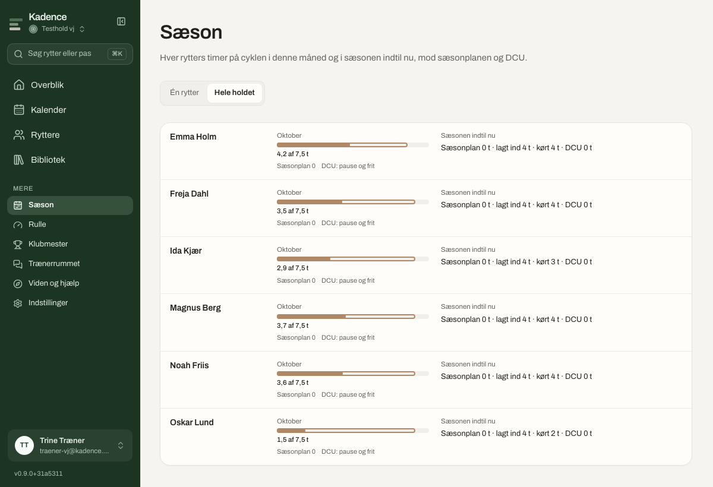
De fire tal går igen overalt, hvor der planlægges: Sæsonplan er det, planen siger, Lagt ind er det, der ligger i kalenderen, Kørt er det, der faktisk blev kørt, og DCU er rammen for rytterens årgang.
Trivsel og opmærksomhedspunkter
Rytterne checker ind hver morgen: søvn, energi og smerter efter Team Danmarks smertetrappe, og flere spørgsmål bag "Mere". Svarene giver en zone efter Kolding Talents trivselsmodel: grøn, gul eller rød. Gul i en periode betyder en snak mellem rytter, forældre og træner inden for 14 dage; rød betyder, at der skal hjælp fra fagfolk ind over. Kadence stiller aldrig en diagnose.
Opmærksomhedspunkterne kommer fra reglerne, uden en model: timer på cyklen over eller under DCU's ramme, mere end 15 % flere timer end de seneste uger, en tur længere end DCU's grænse, styrkepas med under 48 timer imellem, træningspas der gik helt anderledes end planlagt, meget tid i mellemzonen når holdet bruger "Lav intensitet først", for lidt søvn, smerter og check-ins i gul eller rød zone. Hvert punkt har et ord for, hvor meget det betyder: "Vigtigt nu", "Værd at se på" eller "Godt at vide". Vist, aldrig håndhævet. Du bestemmer.
AI'en
AI'en foreslår, og du bestemmer. Den kan bygge et træningspas ud fra dine egne ord, foreslå en uge ud fra holdets bibliotek og sæsonplanen, sammensætte et program i samtale, og skrive et par sætninger på toppen af opmærksomhedspunkterne, hvis holdet har sagt, at den må læse rytternes data. Alt vises først, og intet gemmes, før du trykker. Modellen kører hos en europæisk udbyder eller på klubbens egen maskine. Er der ingen model sat op, virker alt andet, og knapperne siger det.
Holdets indstillinger
- Holdet: træningsgrundlaget, DCU's timer eller holdets egne, "Lav intensitet først", og holdets tre tal for piloten.
- Arbejdsrum: medlemmerne, link til ny adgangskode for en person, holdets logo og billede.
- AI: om AI'en må læse rytternes data, og hvilken model holdet bruger.
- Data: alt hentes ud som regneark og JSON, og arbejdsrummet kan slettes helt igen.
Kapitel 4
For rytteren
Tyve sekunder om dagen: tre svar om morgenen, ét tryk på Udført efter træning.
I dag
Første gang hjælper Kom i gang dig: hvad du kører med, dine tærskler, et ja til din forælder, og Kadence på hjemmeskærmen. Derefter åbner I dag med check-in: hvor mange timer du sov, din energi fra 1 til 5, og om noget gør ondt. Tryk Gem. Flere spørgsmål og en note ligger bag "Mere". Din træner kan læse det; dine forældre kun, hvis du deler det.
Dit træningspas i dag viser, hvad der er planlagt, med tid og sted, hvis træneren har sat det. Når du har trænet, trykker du Udført, retter minutterne, hvis det blev anderledes, og siger, hvor hårdt det var fra 1 til 10. Det giver træningspasset sin belastning, også uden wattmåler. Kør indendørs åbner træningspasset i Rulle. Se hele træningspasset viser trinene og samtalen om træningspasset, hvor du og træneren skriver sammen.
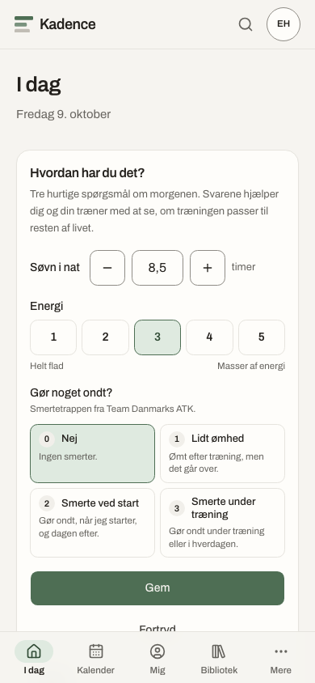
Kalender
Din uge, en dag ad gangen på telefonen og side om side på computeren. Farverne siger, hvordan det gik. Øverst står timerne på cyklen mod sæsonplanen. Du kan selv lægge et træningspas ind fra biblioteket eller bygge dit eget, logge en træning, der ikke var planlagt, og uploade en tur. Egne træningspas er dine; træneren ser dem, men de bliver ikke holdets, før træneren tager dem ind i biblioteket.
Mig
Mig samler resten: din uge, dine seneste ture med watt, puls, zoner og ruten, din form i Kadences egne ord, kondition, træthed og friskhed, dine check-ins de seneste 14 dage, dine procesmål som DCU's 30 styrkepas om vinteren, dine rekorder, altid mod dig selv og aldrig mod andre, og upload af en tur.
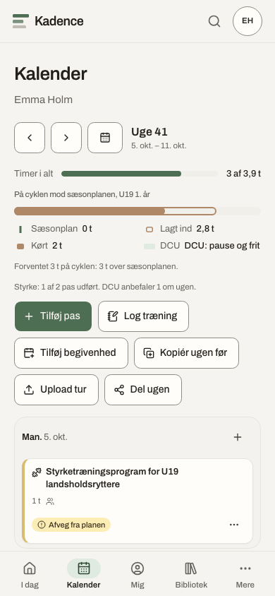
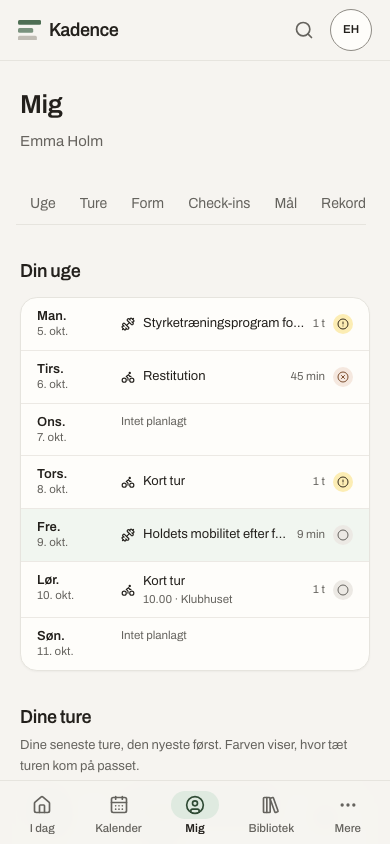
Enheder og ture
En tur kommer ind på fire måder, og alle lander på det træningspas, den hører til. Forbind din Garmin, Wahoo eller Polar under Indstillinger → Enheder, hvor installationen har nøgler til dem; så kommer turene af sig selv. Læg en FIT-fil ind selv; det virker altid. Sæt din Garmin i computeren eller telefonen med et kabel, så henter Kadence de nye ture fra den. Hent dit Strava-arkiv én gang, så har Kadence dine gamle ture. Et cykelpas kan sendes den anden vej, til din cykelcomputer, fra træningspasset i kalenderen.
Rulle
Når du ikke kan komme ud, kører du dagens træningspas på hometraineren i Rulle. Åbn Kadence i Chrome eller Edge på en computer eller en Android-telefon, forbind hometraineren og pulsbæltet over Bluetooth, og tryk Start. En smart hometrainer holder hver bloks watt selv. Turen gemmes som en almindelig tur på træningspasset, også hvis nettet forsvinder undervejs. Safari og Firefox kan ikke tale med hometraineren og siger det.
Profil
Under Indstillinger → Profil bestemmer du, hvad dine forældre kan se: din træning, og om de kan se, hvordan du har det. Det er dit valg, og du kan ændre det når som helst. Her bekræfter du en forælder, din træner har koblet på, retter dine tærskler, skriver dit UCI-ID, så dine løb kan læses fra Cykling Danmark, slår påmindelser til, og kan forlade holdet igen. Fra det år, du fylder 18, bekræfter du dine forældre igen som voksen.
Kapitel 5
For forælderen
Én side om dit barn, og den viden du skal bruge for at bakke op.
Barnets side
Du lander på siden med dit barns navn. Øverst dagens træningspas med tid, sted og hvem der kører. Så ugen, de næste 30 dage med løb, lejre og familiens egne dage, og hvordan det går, hvis dit barn deler det: check-ins som farver og formen i ord. Du kan læse samtalerne om træningen mellem dit barn og træneren, men ikke skrive i dem. Der findes ingen private beskeder mellem en voksen og en ung rytter i Kadence.
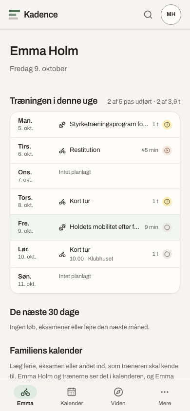
Det ene sted, du selv skriver, er familiens kalender: ferie, eksamen og andre dage, træneren skal kende til. De står i dit barns kalender, så ugen kan planlægges uden om dem.
Hvad du kan se, og hvorfor
Træneren kobler dig på dit barn og sender et link. Du ser først noget, når dit barn selv har sagt ja til forbindelsen under sin profil. Dit barn bestemmer også, om du kan se træningen, og om du kan se, hvordan det går. Det er rytterens valg, og det er helt i orden. Tal sammen om det.
Forældreguiden
Under Viden og hjælp ligger Forældreguiden: Team Danmarks og Kolding Talents ti temaer og ni råd til sportsforældre, skrevet kort med Kadences egne ord og med links til originalerne, og tre afsnit om søvn, skole ved siden af sporten, og hvad du kan se her. Der ligger også åbne sider om mad og drikke, energi til løb, gearing, udstyr og klasserne, som alle kan læse uden login.
Kapitel 6
Ordene
Kadence bruger få ord og de samme overalt. Her er de.
- Træningspas
- Én træning i kalenderen, på cyklen, i styrkerummet eller noget tredje. Rytterens uge består af træningspas.
- Tur
- Det, der faktisk blev kørt: en fil fra cykelcomputeren, uret eller hometraineren, der lander på sit træningspas.
- Skabelon
- Et træningspas i biblioteket, der kan lægges i kalenderen igen og igen.
- Forløb
- Flere ugers træningspas fra biblioteket, lagt ind fra en mandag hos en eller flere ryttere.
- Program
- En opskrift på ét styrkepas: øvelser med tegninger og doser. Bliver til et træningspas, når det lægges i kalenderen.
- DCU's styrkeprogrammer
- En serie træningspas med progression for U17, U19 og U23, hentet ind i biblioteket fra Cykling Danmarks materiale.
- Sæsonplan
- Timerne måned for måned fra oktober til september, med DCU's tal ved siden af.
- Planlæg ugen
- Det sted, træneren lægger en hel uge på én gang, for holdet, en årgang eller enkelte ryttere.
- Check-in
- Rytterens tre svar om morgenen: søvn, energi og smerter. Giver en zone: grøn, gul eller rød.
- Opmærksomhedspunkt
- Noget værd at se på i ugen, der er i gang, fundet af reglerne. Vist, aldrig håndhævet. Kan markeres afklaret.
- Kondition, træthed og friskhed
- Kadences egne ord for formen. En times træning i tærskeltempo tæller 100; træningspas uden wattmåler tæller ud fra puls eller hvor hårdt det føltes.
- RPE
- Hvor hårdt træningspasset var fra 1 til 10. 1 er meget, meget let, 5 er hårdt, og 10 er det hårdeste, man kan.
- Zoner
- Kadences syv træningszoner fra let til alt ud, regnet ud fra rytterens FTP og tærskelpuls.
- Hold og arbejdsrum
- Holdet er dem, du træner med. Indstillingerne kalder det arbejdsrum, fordi det også er stedet, dataene bor.
- Rulle
- Dagens træningspas på hometraineren, i browseren, over Bluetooth.
Kapitel 7
Sikkerhed og dine data
Adskillelsen ligger i databasen, og der er altid en vej ud.
Hvem ser hvad
| Hvem | Ser | Skriver |
|---|---|---|
| Træneren | Alle holdets ryttere: træningspas, ture, check-ins og samtaler | Træningspas, forløb, programmer, sæsonplaner, kommentarer |
| Rytteren | Kun sig selv. En holdkammerat ser aldrig dine tal | Check-in, Udført, egne træningspas, kommentarer, hvad forældrene ser |
| Forælderen | Sit eget barns træning, når barnet har sagt ja, og trivsel kun hvis barnet deler | Familiens dage i barnets kalender |
Reglerne håndhæves i databasen, ikke kun i skærmbillederne, og der er tests, der beviser det. Alle ændringer registreres i et revisionsspor, der ikke kan redigeres.
Log ind sikkert
Passkeys og totrinsbekræftelse er der fra første dag under Indstillinger → Sikkerhed. Vi anbefaler en passkey på telefonen: den kan ikke gættes og ikke fiskes. Glemmer du din adgangskode, går vejen gennem din træner, der laver et nyt link til dig.
Dine data, altid
Alt, holdet ejer, kan hentes ud under Indstillinger → Data som regneark og JSON uden at spørge nogen, og arbejdsrummet kan slettes helt igen, revisionsspor inklusive. En rytter, der forlader holdet, tager ikke sin historik med, men kan hente en kopi først. Kadence ligger hos europæiske leverandører på EU-jord, sprogmodellen inklusive, eller på klubbens egen server. Listen over, hvem der kan se hvad, er offentlig.
Kapitel 8
Hjælp
Når noget driller, eller du vil vide mere.
Viden og hjælp i menuen samler Trænerguiden, Forældreguiden, de åbne sider om sporten og en forklaring på hver del af Kadence, i den rytme en sæson lever i. Søg finder et afsnit, når du skriver et par ord. De åbne sider og beregnerne for gearing og energi kan alle læse uden login, også dem der ikke er på holdet.
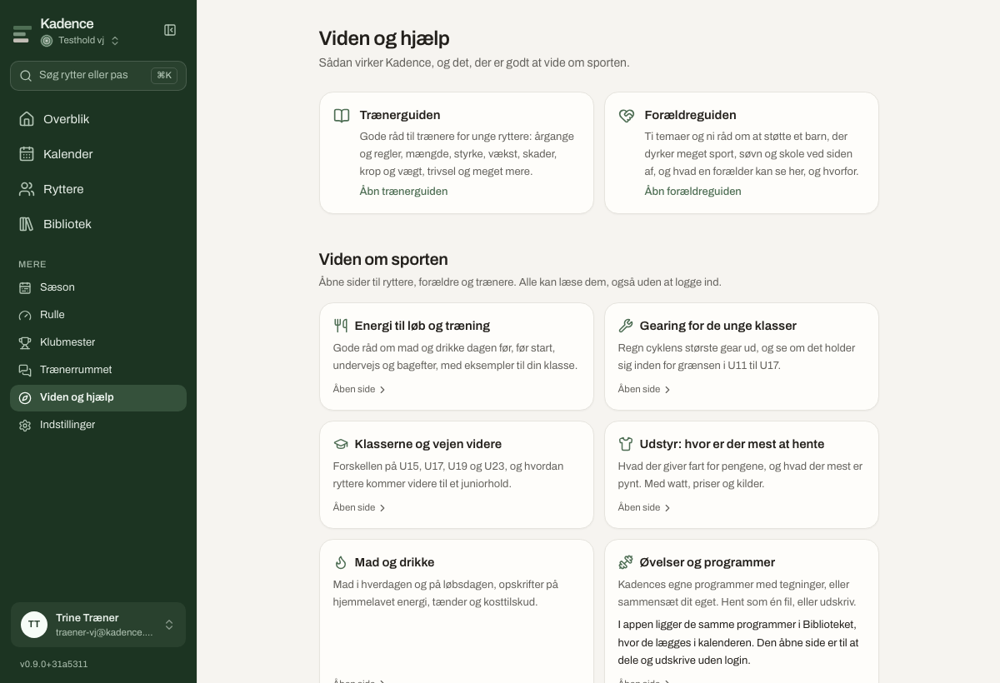
Mangler der noget? Skriv til os, eller ret siden selv: koden er åben og ligger på github.com/MartinNymannVinther/kadence. Kadence er ét værktøj i Haij-familien, haij.dk.
Kadence · Brugervejledning · version 0.9 · oktober 2026. Tal og navne i billederne er opdigtede. Fitness, fatigue og form hedder kondition, træthed og friskhed i Kadence; andre værktøjers navne for dem bruges ikke.